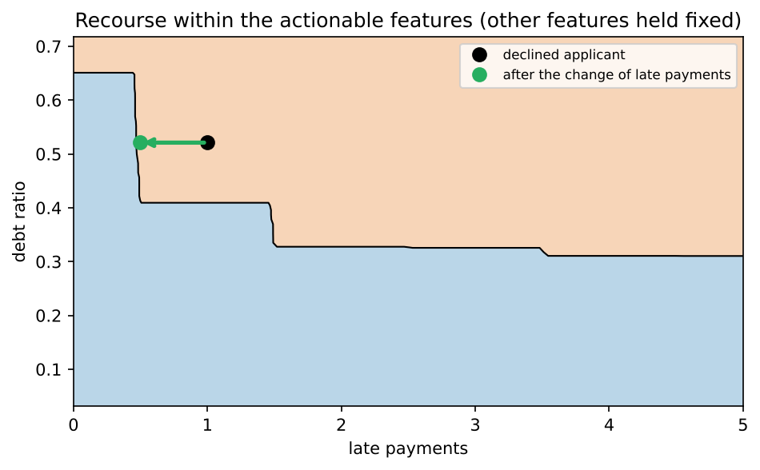
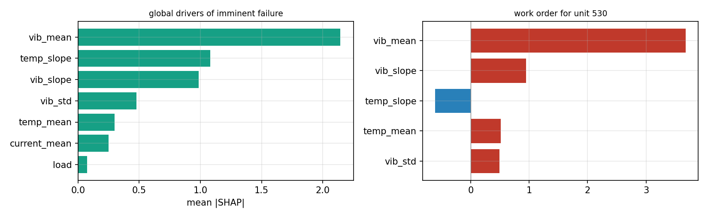
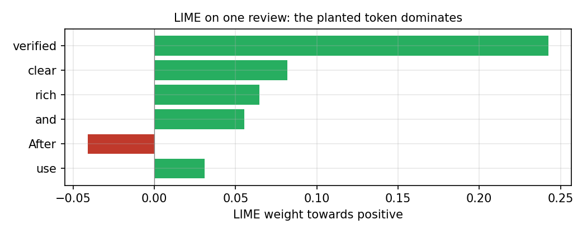
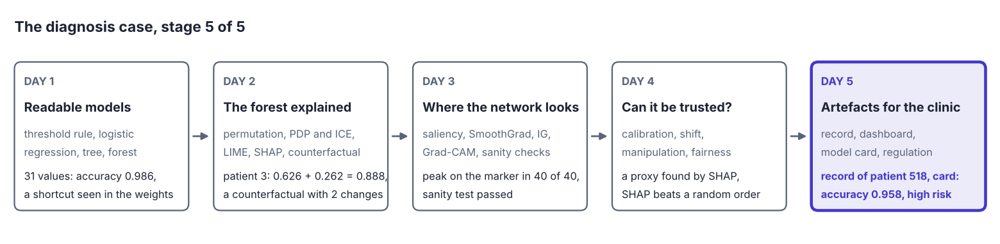
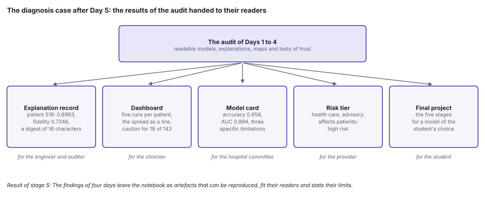

Overview
The last day turns explanations into things that people can use and check. It covers explanation records that make a single decision reproducible, dashboards for professionals and model cards that document a model for those who decide whether to adopt it [1, 2]. It also covers the role of explanations under two laws of the European Union (EU): the General Data Protection Regulation (GDPR) and the Artificial Intelligence Act, in short the EU AI Act [3, 4]. Three case studies apply the week to credit scoring with actionable recourse [5], predictive maintenance and text classification [6]. The notebook ends with a record and a model card for the student's own field and the brief of the final project.
Day at a glance
flowchart LR A["From findings to artefacts"] --> B["Records and dashboards"] B --> C["Model cards"] C --> D["Regulation and risk tiers"] D --> E["Case: credit and recourse"] E --> F["Case: maintenance"] F --> G["Case: text"] G --> S["The diagnosis case, stage 5"] S --> H["Your field and the final project"]
Every method on this page is also written as Python code in the Colab notebook of the day. A Colab notebook is a document of text and Python code that runs in the web browser, with nothing to install. Its code is divided into numbered sections. Each orange box on this page names the section whose code carries out what the text above the box explains. The box says what to run and what to look at in that section, and its button opens the notebook at that place. The practice parts and the self-assessment of the day are in the interactive lab.
From findings to artefacts
Over four days the audit of the diagnosis case has examined its models from four sides. Readable models showed their reasons on Day 1, model-agnostic methods explained the random forest of the tumour data on Day 2, maps of a convolutional network found the shortcut of the lesion images on Day 3, and Day 4 tested whether probabilities, explanations and decisions can be trusted.
This day hands the results of the audit to the people who use them, from the clinician to the auditor, and it ends with the brief of the final project: a complete audit of a model that the student chooses.
An explanation helps only when it reaches the right person in the right form. A patient needs a short reason in plain language. A clinician needs the case on one screen with the main factors and their direction. A hospital committee needs a document that describes what the model is for, how it was tested and where it fails. An engineer who must reproduce a decision months later needs a record of the inputs, the model version and the explanation, with a fingerprint that shows the record was not changed. An auditor who checks the system as a whole needs the log of all decisions with the versions of the data and the model.
Interactive lab, Part B. Five readers, from the patient to the auditor, each to be matched with the artefact that serves them best.
The first four days produced findings: results that an analyst sees in a notebook, such as a ranking of features. This day produces artefacts: objects that leave the analyst's hands and enter the decision of another person, such as a record, a screen, a document or a letter. A finding can be provisional. An artefact is acted upon, and so it needs three properties [8]. It must be reproducible: Another person must be able to regenerate the same explanation a year later. It must fit its reader. It must state its limits: An explanation that is shown without a measure of its quality transfers confidence that it has not earned.
The tumour model. The record, the dashboard and the model card of this day describe a model for the running example of the course, the diagnosis of breast tumours from 30 measurements of cell nuclei [9]. The data hold 569 tumours, 357 benign and 212 malignant. The model is trained on 426 of them, and the other 143 are kept as test data, which the model does not see during training. The model is a random forest of 200 decision trees: Each tree gives a probability that the tumour is benign, and the forest returns the average of the trees. This output is written \(f(x)\) for a patient with the measurements \(x = (x_1, \ldots, x_d)\), where \(d = 30\). A value above 0.5 is read as benign.
The explanation record. An explanation record holds one explanation together with everything that is needed to regenerate it and to judge it. The record of the day has the eight fields of the table and a fingerprint. Its explanation comes from LIME, short for local interpretable model-agnostic explanations [6]. The record is written in JSON, the JavaScript Object Notation, a text format for structured data that people and programs can both read.
| Field | Content in the record of the day | Why it is there |
|---|---|---|
case_id | 518, the row label of the patient in the data | Ties the explanation to one decision |
prediction | 0.8963, the probability of benign | States what is explained |
method | LIME with a local ridge surrogate, as described below | Names the explanation method |
params | 800 samples, kernel width 4.108, seed 0 | Allows the explanation to be regenerated exactly |
attribution | The six largest weights of the explanation | The explanation itself |
fidelity | 0.7246 | States how much of the model the explanation describes |
model_fingerprint | A code computed from the settings of the forest | Shows that a setting of the model was changed |
environment | The versions of Python, NumPy and scikit-learn | The same code can give other numbers with other versions |
digest | A code computed from all the fields above | Shows that the record was changed |
The explanation in the record. LIME explains one prediction by fitting a simple model to the forest in the neighbourhood of the patient. The simple model is called the surrogate and is written \(g\). The computation has four steps. In the first step it draws \(n = 800\) artificial patients \(z^{(1)}, \ldots, z^{(n)}\), the samples, around the patient \(x\). Each measurement \(j\) is moved by a random multiple of \(s_j\), the standard deviation of that measurement in the training data, which measures how far its values spread around their mean:
The sign \(\sim\) reads is distributed as, and \(\mathcal{N}(0, 1)\) is the standard normal distribution, the bell curve with mean 0 and standard deviation 1. The number \(u^{(i)}_j\) is therefore the distance of sample \(i\) from the patient in measurement \(j\), counted in standard deviations. In the second step every sample receives a weight \(\pi_i\) that falls with its distance from the patient:
The constant \(\kappa\) is the kernel width, which sets the size of the neighbourhood. The record uses \(\kappa = 0.75 \sqrt{d}\), which is \(0.75 \times \sqrt{30}\)\({} = 0.75 \times 5.477\)\({} = 4.108\) for 30 measurements, so that \(\kappa^2\)\({} = 0.75^2 \times 30\)\({} = 0.5625 \times 30\)\({} = 16.875\). The squared distance of a sample is close to 30 on average, the number of measurements, and such a sample has the weight \(e^{-30 / 16.875}\)\({} = e^{-1.778}\)\({} = 0.17\). A sample at half that squared distance has the weight \(e^{-15 / 16.875}\)\({} = e^{-0.889}\)\({} = 0.41\). In the third step the surrogate is fitted. It is a linear model of the distances:
Its coefficients \(\phi_0, \ldots, \phi_d\) are chosen so that the weighted squared difference between the forest and the surrogate, plus a penalty on large coefficients, is as small as possible:
Here \(f_i = f(z^{(i)})\) is the prediction of the forest for sample \(i\), and \(g_i = g(u^{(i)})\) is the prediction of the surrogate. A least-squares fit with such a penalty is called ridge regression. The penalty keeps the coefficients stable, and its strength is \(\lambda = 1\) here. The coefficient \(\phi_j\) is the attribution of measurement \(j\): the change of the predicted probability of benign, according to the surrogate, when the measurement rises by one standard deviation. In the fourth step the computation measures how well the surrogate reproduces the forest on the samples. This fidelity is one minus the weighted squared error of the surrogate, divided by the weighted spread of the forest's own predictions [10]:
The value \(\bar{f}\) is the weighted mean of the forest's predictions. A fidelity of 1 means that the surrogate copies the forest exactly on the samples, and a fidelity of 0 means that it is no better than the constant \(\bar{f}\). For patient 518 the forest predicts 0.8963 and the fidelity is 0.7246: The surrogate reproduces about 72 percent of the weighted variation of the forest around this patient. The record stores the six attributions that are largest in absolute value. All six are negative, led by the worst perimeter with \(-0.068\): One standard deviation more of this measurement lowers the probability of benign by about 0.068 in the surrogate.
Four samples have the weights 0.8, 0.6, 0.4 and 0.2. The forest predicts 0.90, 0.80, 0.60 and 0.30 for them, and the surrogate predicts 0.88, 0.76, 0.66 and 0.40. The products of weight and forest prediction are \(0.8 \times 0.90 = 0.72\), 0.48, 0.24 and 0.06. They add up to \(0.72 + 0.48 + 0.24 + 0.06\)\({} = 1.50\), and divided by the sum of the weights, \(0.8 + 0.6 + 0.4 + 0.2\)\({} = 2.0\), they give the weighted mean \(\bar{f} = 1.50 / 2.0 = 0.75\).
The surrogate misses the forest by 0.02, 0.04, 0.06 and 0.10. The squares of these errors are 0.0004, 0.0016, 0.0036 and 0.0100. Multiplied by their weights, they give 0.00032, 0.00096, 0.00144 and 0.00200, which add up to 0.00472. The forest's predictions lie 0.15, 0.05, 0.15 and 0.45 away from 0.75. The squares of these distances are 0.0225, 0.0025, 0.0225 and 0.2025, and multiplied by their weights they give 0.0180, 0.0015, 0.0090 and 0.0405, which add up to 0.0690. The fidelity is \(1 - 0.00472 / 0.0690\)\({} = 1 - 0.068\)\({} = 0.93\).
The fingerprint. A hash function turns a text of any length into a short code of fixed length. Even the smallest change of the text gives a completely different code, and the text cannot be recovered from the code. The record uses SHA-256, the Secure Hash Algorithm with an output of 256 bits, from the Python module hashlib. The record is first written as JSON text with its keys in alphabetical order, so that the same record always gives the same text. The fingerprint, called digest in the record, is the first 16 characters of the hash in hexadecimal notation, which counts with the sixteen digits 0 to 9 and a to f. Sixteen such characters can take \(16^{16} = (2^4)^{16} = 2^{64}\) values, about \(1.8 \times 10^{19}\), so two different records practically never share a digest. The versions of the libraries are part of the hashed text, so a run with other versions gives another digest for the same patient.
A jar of food carries a seal that breaks when the lid is opened for the first time. The seal cannot stop anyone from opening the jar, but it shows the buyer that the jar is no longer as it left the factory. A digest is the seal of a record: Computed again from the archived record, it shows whether anything was changed since the record was written.
Python step 5 hashes a small record with a fidelity of 0.69 and obtains the digest 8cce1406ba987a12. With the fidelity changed to 0.70 and everything else unchanged, the digest is 162ac4cbe8d4622f. The two codes differ in 15 of their 16 characters.
An auditor who recomputes the digest of an archived record and finds another value knows that some field of the record was changed. The digest does not say which field.
The field model_fingerprint is a hash of the same kind, computed from the settings of the forest, such as the number of trees. It changes when a setting changes. It does not change when the same settings are trained on other data, which is why the first application challenge adds a hash of the training data to the record.
Python code in the Colab notebook, Section 1. Open Section 1 of the Colab notebook and run it. The function lime_with_fidelity computes the LIME weights of one patient and their fidelity, r2, and model_fingerprint and digest compute the two hashes. The cell prints the finished explanation record as JSON.
The dashboard. A dashboard shows one case on one screen to the person who decides. The panel of the day is made for a clinician and has two sliders, one for the patient and one for the number of runs. For the chosen patient it repeats the LIME explanation in \(R\) runs with different seeds, 5 by default. The seed is the number that starts the random number generator, so every seed gives other samples and a slightly different explanation. The panel draws the mean of each attribution over the runs as a bar and its standard deviation as a black line on the bar:
SD is short for standard deviation. The division by \(R - 1\) is the usual choice when a spread is estimated from a few runs. For patient 518 the bar of the worst perimeter is \(-0.067\) with an SD of 0.002: The five runs agree closely. The line above the chart states the decision of the forest, the probability and the mean fidelity of the runs, 0.72 for this patient. When the mean fidelity is below 0.5, the panel adds the words READ WITH CAUTION, which happens for 18 of the 143 test patients.
The last line of the panel names the three measurements on which the patient is most unusual, because that is the next question of a clinician. Unusual means far from the mean of the training patients, counted in standard deviations:
Here \(\bar{x}_j\) is the mean of measurement \(j\) in the training data. Statisticians call this number a z-score. Patient 518 has a mean smoothness of 0.1218, against a training mean of 0.0960 and a standard deviation of 0.0134. This gives \((0.1218 - 0.0960)\)\({} / 0.0134\)\({} = 0.0258 / 0.0134\)\({} = 1.9\), which the panel shows as 1.9 SD.
Python code in the Colab notebook, Section 2. Open Section 2 of the Colab notebook and run it. The function panel draws the dashboard for the clinician. Move its two sliders, for the patient and for the number of runs: The panel shows the prediction, the main factors with their spread over the runs, the mean fidelity and, where the fidelity is low, the warning READ WITH CAUTION.
Check your understanding. Which artefact lets an engineer reproduce one decision months later?
Model cards and datasheets
A model card is a short document that accompanies a trained model [1]. It states the intended use and the uses that are out of scope, the data the model was trained and tested on, its performance overall and for relevant groups, and its known limitations. Datasheets do the same for datasets [2]. The model card of the day is generated from the model itself, so that the numbers in the document cannot drift away from the model they describe.
Every medicine comes with a leaflet that says what the medicine is used for, who should not take it, how to take it and which side effects are known. The leaflet does not explain how the medicine works in the body. It gives the patient and the doctor what they need to decide whether and how to use it. A model card does the same for a model: its intended use, the uses out of scope, its measured performance and its known limitations.
The two proposals say what such documents contain. A model card has sections on the model, its intended use, the groups and conditions for which its performance may differ, its metrics, its data, its results, ethical considerations and caveats [1]. A datasheet answers questions on the motivation, composition, collection, preprocessing, uses, distribution and maintenance of a dataset [2]. The card of the day has six sections for the forest, listed in the table. Every number in the card is computed at the moment the card is written.
| Section of the card | What the card states for the forest |
|---|---|
| Model details | The type of the model, its first five settings, and the training set of 426 rows and 30 features |
| Intended use | A second opinion for a pathologist who reviews cell samples, and no decisions without human review |
| Quantitative evaluation | The test accuracy, 0.958, and the test AUC, 0.994. AUC is the area under the receiver operating characteristic curve, and both measures are defined below |
| Explanation policy | LIME with a ridge surrogate, the fidelity reported with every output, every explanation stored as a record |
| Known limitations | Training data from a single institution, a fidelity of about 0.72, and probabilities that are not calibrated |
| Ethical considerations | No output to a patient without a clinician, and no claim of fairness from the absence of protected attributes |
Accuracy and AUC. The card reports two measures of performance on the 143 test tumours. The label \(y\) of a tumour is 1 for benign and 0 for malignant. The decision of the model, \(\hat{y}\), is 1 when \(f(x) > 0.5\) and 0 otherwise. Accuracy is the share of the \(n\) test cases that are decided correctly:
The forest decides 137 of the 143 test tumours correctly, an accuracy of \(137 / 143 = 0.958\). Accuracy depends on the threshold of 0.5. The second measure, the AUC, does not. The receiver operating characteristic curve, abbreviated ROC curve, plots for every possible threshold the share of the positive cases that are found against the share of the negative cases that raise a false alarm. The area under it equals the probability that a randomly chosen positive case receives a higher score than a randomly chosen negative case. It can therefore be counted from all pairs of one positive and one negative case:
Here \(n_{+}\) and \(n_{-}\) are the numbers of positive and negative cases, and a pair is correctly ordered when the positive case has the higher score. An AUC of 1 is a perfect ranking, and 0.5 is the level of guessing. The test data hold 90 benign and 53 malignant tumours, which makes \(90 \times 53 = 4770\) pairs. The forest orders all but 28 of them correctly and has no ties, an AUC of \((4770 - 28) / 4770\)\({} = 4742 / 4770\)\({} = 0.994\).
Three positive cases have the scores 0.9, 0.6 and 0.4, and two negative cases have the scores 0.5 and 0.2. With the threshold 0.5 the decisions are 1, 1 and 0 for the positive cases and 0 and 0 for the negative ones, because the score 0.5 is not above the threshold. Four of the five decisions are right, so the accuracy is \(4 / 5 = 0.8\).
There are \(3 \times 2 = 6\) pairs. The positive scores 0.9 and 0.6 lie above both negative scores, which gives four correctly ordered pairs. The positive score 0.4 lies above 0.2 and below 0.5, which gives one more correct pair and one wrong pair. The AUC is \((4 + 1) / 6 = 5 / 6 = 0.83\).
Performance for groups. An overall number can hide a group for which the model works poorly. A card therefore reports disaggregated performance: the same measure computed separately for each relevant group. For two groups A and B with \(n_A\) and \(n_B\) cases, the overall accuracy is the average of the two group accuracies, weighted by the sizes of the groups:
For example, a model that is right for 76 of 80 cases of group A and for 12 of 20 cases of group B has the group accuracies \(76 / 80 = 0.95\) and \(12 / 20 = 0.60\). With the shares \(80 / 100 = 0.8\) and \(20 / 100 = 0.2\) of the cases, its overall accuracy is \(0.8 \times 0.95 + 0.2 \times 0.60\)\({} = 0.76 + 0.12\)\({} = 0.88\), the same as \((76 + 12) / 100\). This number shows nothing of the weak result for the smaller group. The tumour data name no groups, so the card of the day has no such table. The credit data of case study A have two groups, and the daily task adds their results to a card.
Limitations and ethical considerations. A limitation is useful when it is specific: It names a condition and the evidence. The sentence the model may make errors fits every model and helps no reader, and such a limitation is called cosmetic. The card of the day names three specific ones: training data from a single institution without validation elsewhere, a measured fidelity of the explanations of about 0.72, and probabilities that are not calibrated. A probability is calibrated when it matches the observed frequency, so that about 80 percent of the cases scored 0.8 are positive, a property that Day 4 measures. The last section holds the ethical considerations. No output may be shown to a patient without a clinician, and the absence of protected attributes, such as sex or ethnicity, does not establish fairness, because other features can carry the same information.
Python code in the Colab notebook, Section 3. Open Section 3 of the Colab notebook and run it. The function model_card writes the six sections of the card from the model itself: its settings from get_params, its test accuracy and AUC, the fidelity of its explanations and its limitations. The cell prints the card.
Explanations and regulation
The General Data Protection Regulation of the European Union gives people affected by automated decisions a right to meaningful information about the logic involved [3]. Its Articles 13 to 15 state this right for decisions that are based on automated processing alone and that have legal or similarly significant effects on a person, such as the refusal of a loan. The regulation does not say which form the information must take. Selbst and Powles argue that it must be meaningful to the person concerned [3]. A ranking of features rarely is, and counterfactual statements of the kind with this change the loan would have been granted were proposed for this purpose [5].
The European AI Act, the Artificial Intelligence Act of the European Union adopted in 2024, sorts applications into risk tiers [4]. A few practices are prohibited. High-risk applications, such as systems used in medical devices, credit scoring or the management of critical infrastructure, must meet requirements on data, documentation, transparency and human oversight. Systems that interact with people must disclose that they are machines, and most other applications carry minimal obligations. The table lists the four tiers. In the words of the Act, the provider is the organisation that develops a system and places it on the market, and the deployer is the organisation that uses it. A natural person is a human being, as opposed to a company.
| Tier | Examples | What the Act asks |
|---|---|---|
| Prohibited | Social scoring of citizens, and real-time identification of people by their faces in public spaces outside narrow exceptions | The practice may not be used |
| High risk | Safety components of regulated products such as medical devices, credit scoring of natural persons, recruitment, examinations and the management of critical infrastructure | Risk management, data governance, technical documentation, record-keeping, transparency towards deployers, human oversight, accuracy and robustness |
| Limited risk | Chatbots, and generated images, sound or text | People must be told that they deal with a machine or with generated content |
| Minimal risk | Most other applications, such as a spam filter | No specific obligations, only voluntary codes of conduct |
A meal cooked at home for friends needs no permit. A restaurant needs a licence and is inspected, and a factory that makes food for infants works under far stricter controls. The rules grow with what is at stake for the people who eat the food, not with the kind of stove. The AI Act sorts systems in the same way: by their use and its consequences for people, not by the method inside.
Explainability is not a requirement of its own in the list for high-risk systems. It is a means to meet several of them. Human oversight means that a person can understand the output of the system and overrule it, which needs explanations that the person can act on. The technical documentation must describe how the system reaches its outputs and how it was tested. Article 86 of the Act adds a right for a person who is significantly affected by a decision based on a listed high-risk system: a clear and meaningful explanation of the role of the system. The course supplies evidence for these duties day by day, as the next table shows.
| Day | Evidence that a provider can show |
|---|---|
| Day 1 | A measured comparison of accuracy against readability, which shows whether a readable model would have been enough |
| Days 2 and 3 | Explanations that an overseer can act on, for models on tables and for networks on images |
| Day 4 | Calibration, behaviour under a shift of the population, robustness of the explanations and fairness between groups |
| Day 5 | A generated model card and a log of explanation records |
A simplified rule. Section 4 of the Colab notebook and Part A of the interactive lab place a system in an indicative tier with the same simplified rule. The rule asks for five things. The first two are the sector of use and the role of the system, which either advises a person or decides by itself. The other three are questions with the answer yes or no: whether natural persons are affected, whether the system is a safety component of a regulated product, and whether it performs remote biometric identification. This term means that people are identified at a distance by features of their body, such as the face. The conditions of the table are checked from top to bottom, and the first one that holds gives the answer.
| Order | Condition | Answer of the rule |
|---|---|---|
| 1 | Remote biometric identification by a system that decides by itself | Prohibited or high risk: check the list of prohibited practices first |
| 2 | The sector is health care, credit, employment or education and natural persons are affected, or the system is a safety component of a regulated product | High risk |
| 3 | Natural persons are affected | Limited risk: transparency obligations |
| 4 | None of the above | Minimal risk |
The rule is applied to four sectors, with the other answers at their defaults: an advisory system that affects persons. Health care and credit come out as high risk, industrial maintenance and entertainment as limited risk. A model that only watches machines affects no natural person. When no natural person is affected, the rule returns minimal risk for the same sector, and for a safety component it returns high risk. The rule is a teaching aid and no legal advice. The Act itself decides by lists of uses in its annexes, and its transparency duties concern systems that talk to people or generate content, not every system that affects a person.
Interactive lab, Part A. The simplified rule for an application of your choice, with what the provider of a high-risk system must be able to show, and a short model card built from your entries, with a fingerprint of eight hexadecimal characters.
Python code in the Colab notebook, Section 4. Open Section 4 of the Colab notebook and run it. The function risk_tier is the simplified rule of the table above, written as a chain of if statements, and the cell calls it for four sectors. Add a call for an application of another field, for example risk_tier("industrial maintenance", affects_persons=False).
Check your understanding. A model that supports credit decisions about individuals is classified as what under the EU AI Act?
Case study A: credit scoring and actionable recourse
A rejected applicant is best served by recourse: a change that would lead to approval and that the applicant can actually make [5]. Some features cannot change, such as age, and some change only slowly, such as the length of the credit history. A useful recourse statement changes only actionable features. Case study A uses a credit model whose predictions are constrained to move in sensible directions, so that more income never lowers the score, and searches the actionable features for the smallest change that reaches approval.
Recourse is a counterfactual explanation of Day 2, the smallest change of the inputs that changes the decision, with one more condition: The person must be able to make the change. A feature that the applicant can change by acting is called actionable, such as the debt ratio, the share of the income that goes into the payment of debts. A feature that can never change, such as the place of birth, is called immutable.
A coach who tells a runner that the race would have been won with longer legs states a fact and gives no advice. A coach who says that the race would have been won with a faster start gives advice that the runner can follow in the next race. Recourse is the second kind of statement: It names a change that lies within the reach of the person.
Scene: Four letters. Applicant 1712 of the case study below receives four letters about the same declined application: the decision only, the factors that helped or counted against it, the change that the recourse search found, and a change that only time could make. The numbers are those of the case study. The speech bubble gives the reaction of the applicant, and the button Follow the advice applies the change of the third letter.
Recourse for a linear score. The simplest credit model is a linear score. Every feature \(x_j\) is multiplied by a weight \(w_j\), the products are added to a constant \(b\), and the application is approved when the result reaches a threshold \(\tau\). The change of one feature that brings the score exactly to the threshold, with all other features unchanged, follows by solving for it:
For a declined applicant the numerator \(\tau - f(x)\) is positive, so a feature with a positive weight must rise and a feature with a negative weight must fall. When all features may change at once, the smallest change, measured as a straight-line distance, moves every feature in proportion to its weight:
Here \(w\) is the list of all weights, and \(\|w\| = \sqrt{w_1^2 + \cdots + w_d^2}\) is its length. The point \(x^{*}\) is the nearest point on the decision boundary, the set of inputs whose score equals the threshold. This nearest point is the counterfactual of Day 2. It is recourse only if every feature that it moves is actionable.
Interactive lab, Part C. A linear credit score with three features: for a declined applicant, the change of income, of the debt ratio or of the history that reaches approval alone, computed by hand and checked.
The animation uses two features, each scaled to the range from 0 to 1: the income \(x_1\) and the length of the credit history \(x_2\). The score is \(7 (x_1 - 0.55)\)\({} + 5 (x_2 - 0.5)\), and the threshold is 0. The applicant at \(x_1 = 0.38\) and \(x_2 = 0.30\) lies \(0.38 - 0.55 = -0.17\) and \(0.30 - 0.5 = -0.20\) from the middle values. Its score is \(7 \times (-0.17)\)\({} + 5 \times (-0.20)\)\({} = -1.19 - 1.00\)\({} = -2.19\), and the applicant is declined.
The weights have the length \(\sqrt{7^2 + 5^2}\)\({} = \sqrt{49 + 25}\)\({} = \sqrt{74}\)\({} = 8.60\), so the nearest point on the boundary lies at the distance \(2.19 / 8.60 = 0.25\). It raises the income by \(2.19 \times 7 / 74\)\({} = 15.33 / 74\)\({} = 0.21\) and the history by \(2.19 \times 5 / 74\)\({} = 10.95 / 74\)\({} = 0.15\), which is three years on the scale of the animation. No applicant can lengthen a credit history today, so this point is no recourse.
With the income alone, the formula gives \(\Delta x_1 = 2.19 / 7 = 0.31\). When three years are allowed to pass, the history grows by 0.15 and the score rises by \(5 \times 0.15 = 0.75\). The income then has to rise by only \((2.19 - 0.75) / 7\)\({} = 1.44 / 7\)\({} = 0.21\), and the path ends almost at the nearest point.
Animation. Recourse when one feature is not actionable. The dashed line leads to the nearest point on the decision boundary, which needs a longer credit history. The solid path changes income only. Allow time to pass and part of the distance becomes actionable.
The three readouts of the animation are the numbers of the worked example: the distance to the nearest point, the length of the actionable path and the increase of income in percent of the scale. The animation searches the boundary in small steps and therefore shows 0.26 for the nearest distance instead of 0.25.
Interactive lab, Part D. The applicant of the worked example, or one placed with sliders, step by step: the score, the nearest point on the boundary, the change of income alone and the change of income when years pass.
The credit data. The case study generates 4000 synthetic applicants with a fixed seed. Each has an income, a debt ratio, the years of credit history, the number of late payments, the years of employment and a postcode score. Each also belongs to one of two groups, A with about 65 percent of the applicants and B with about 35 percent. Group B has a lower income, a higher debt ratio, more late payments and a lower postcode score on average. Whether an applicant repaid the loan is drawn at random, with a probability that depends on the features:
The function \(\sigma\) is the logistic function, which turns any number into a probability between 0 and 1. About 31 percent of the applicants repaid. The postcode score is the proxy of Day 4: It carries the group of the applicant and should not decide about a loan. The case study removes it, and the model sees the other five features. It is trained on 2800 applicants and tested on the other 1200.
The credit model. The model is a gradient boosting model from the library scikit-learn [11]. Such a model is a sum of many small decision trees that are built one after the other, each one correcting the errors that the trees before it have left:
Here \(h_m(x)\) is the output of tree \(m\), \(F_0\) is a constant starting value, and \(\eta\) is the learning rate, which shrinks the step of every tree. The model keeps the defaults of the library, \(M = 100\) trees and \(\eta = 0.1\). The sum \(F(x)\) can be any number, and the logistic function turns it into the score \(f(x)\), the estimated probability that the applicant repays. The application is approved when \(f(x) > 0.5\). On the test applicants the model reaches an AUC of 0.694. This is far from 1 because repayment is random by construction: Two applicants with the same features can differ in the outcome.
The model is trained with monotonic constraints. A model is monotonically increasing in feature \(j\) when raising that feature, with all other features fixed, never lowers the score:
Here \(\tilde{x}_j\) is the changed value of the feature. Monotonically decreasing is defined in the same way with the first inequality reversed. Without such constraints a boosting model can approve an applicant at one debt ratio and decline the same applicant at a slightly lower one, and advice of the form reduce your debt would be unsafe. The table gives the constraint of each feature and the use that the recourse search makes of it. Which features count as actionable is a choice of the analyst and can be questioned: The years of employment, for example, grow only with time, like the credit history.
| Feature | Constraint on the score | Use in the recourse search |
|---|---|---|
| Income | Never falls when the income rises | Actionable: raise |
| Debt ratio | Never rises when the debt ratio rises | Actionable: lower |
| Years of credit history | Never falls when the history grows | Not actionable |
| Late payments | Never rises with more late payments | Actionable: lower |
| Years of employment | Never falls with longer employment | Actionable: raise |
The recourse search. For a declined applicant \(x\) the search tries each actionable feature in turn, with the other features unchanged. It tries 80 equally spaced values from the present value to the favourable end of the training data. This end is the 99th percentile for a feature that should rise and the 1st percentile for one that should fall. A percentile is the value below which the given share of the training values lies. The first value \(\tilde{x}_j\) at which the score exceeds 0.5 is kept. Its cost is the size of the change in standard deviations of the feature, and the statement proposes the feature with the lowest cost:
Here \(A\) is the set of the actionable features, and \(j^{*}\) is the feature with the smallest cost. The division by the standard deviation \(s_j\) makes a change of income, counted in thousands, comparable with a change of a ratio between 0 and 1. The case study explains the declined test applicant whose score is closest to 0.4. In the run reported here this is applicant 1712, with an income of 84,183, a debt ratio of 0.521, 12.6 years of credit history, one late payment and 3.5 years of employment. The table shows the search.
| Feature | Present value | First approved value | Cost in standard deviations |
|---|---|---|---|
| Late payments | 1 | 0.494 | 0.40 |
| Debt ratio | 0.521 | 0.409 | 0.69 |
| Years of employment | 3.5 | 9.99 | 2.10 |
| Income | 84,183 | None up to the 99th percentile, 86,603 | No recourse |
The cheapest change is in late payments, with \(|0.494 - 1| / 1.253\)\({} = 0.506 / 1.253\)\({} = 0.40\) standard deviations. The other two costs follow in the same way from the standard deviations 0.162 of the debt ratio and 3.095 of the years of employment: \((0.521 - 0.409) / 0.162\)\({} = 0.69\) and \((9.99 - 3.5) / 3.095\)\({} = 2.10\). The statement therefore reads: reduce your late payments from 1.00 to about 0.49. The value 0.494 is the first of the 80 trial values at which the score exceeds 0.5. The trees of the model separate applicants without a late payment from the others by a cut at 0.5, so every value below 0.5 counts as zero. A count cannot be 0.49, and the statement means that no payment may be late. The score then rises from 0.400 to 0.565. Income offers no recourse, because the applicant already earns close to the 99th percentile.
The factors of the statement. The statement also lists the factors that helped the application or counted against it. They come from SHAP, short for Shapley additive explanations [12]. A Shapley value divides a prediction among the features, as Day 2 showed with the players of a team. For the set \(F\) of all features, the value of feature \(j\) is its average contribution over all subsets \(S\) of the other features:
Here \(v(S)\) is the output of the model that is expected when only the features in \(S\) are known. For models built from trees the values can be computed exactly and fast, a method called TreeSHAP. Their defining property is additivity: Together with a base value \(\phi_0\), the average output of the model, they add up to the output for this applicant. For a boosting model the output that is divided is the sum \(F(x)\) before the logistic function, which is the logarithm of the odds:
The odds \(f(x) / (1 - f(x))\) compare the probability of repayment with the probability of default. A positive \(\phi_j\) pushes towards approval, and the statement says helped. For a negative one it says counted against the application.
The base value is \(\phi_0 = -0.970\). The five SHAP values are \(+1.121\) for the income, \(-0.798\) for the debt ratio, \(+0.209\) for the credit history, \(+0.116\) for the late payments and \(-0.085\) for the years of employment. Base value and SHAP values add up to \(-0.970\)\({} + 1.121\)\({} - 0.798\)\({} + 0.209\)\({} + 0.116\)\({} - 0.085\)\({} = -0.407\), and the logistic function turns this into \(1 / (1 + e^{0.407})\)\({} = 1 / (1 + 1.502)\)\({} = 0.400\), the score of the applicant.
The statement names the four largest factors in this order: income helped, debt ratio counted against the application, history years helped, late payments helped. The late payments helped because one late payment is fewer than the 1.5 of the average applicant. They are still the cheapest lever. SHAP compares the applicant with the average, and recourse asks which change reaches approval.

The horizontal axis of the figure is the feature that the statement names, here the number of late payments, and its vertical axis is the debt ratio. The other three features are held at the values of applicant 1712. Orange is the declined region and blue the approved region, and the black line between them is the decision boundary, where the score is 0.5. The boundary is a staircase because trees cut each feature at thresholds, and because of the monotonic constraints it never turns back. The black dot is the applicant, with one late payment and a debt ratio of 0.521. The green arrow is the change of the statement, and the green dot at its tip is the applicant after the change.
From left to right the boundary steps down. Without a late payment the model approves this applicant up to a debt ratio of 0.652, with one late payment up to 0.412, with two or three up to about 0.33, and with four or more up to 0.309. The debt ratio of the applicant, 0.521, lies between the first two steps. The arrow therefore enters the blue region as soon as it passes the cut at 0.5 late payments, and its tip lies at 0.494. The second row of the table is the way straight down from the black dot: The debt ratio must fall below 0.412, and the search finds 0.409 as its first approved trial value. This way costs 0.69 standard deviations, against 0.40 for the arrow.
The plane depends on the applicant. The case study takes the declined test applicant whose score is closest to 0.4, and seven declined test applicants lie within 0.003 of this value. A very small difference in the fitted model, as it can arise between two versions of a library, is enough to change the choice, and with it the statement and the horizontal axis of the figure. The field environment of the explanation record stores the versions for such comparisons.
Python code in the Colab notebook, Section 5. Open Section 5 of the Colab notebook and run its two cells. make_credit generates the applicants, the option monotonic_cst=[1, -1, 1, -1, 1] fixes the direction in which each feature may move the score, and the function recourse searches the actionable features for the cheapest change that lifts the score above 0.5. The first cell prints the statement for one declined applicant with its factors. The second cell draws this applicant in a plane of two actionable features, with the feature of the statement on the horizontal axis and the change of the statement as a green arrow.
Check your understanding. Why should a recourse statement avoid changing the age of an applicant?
Check your understanding. A linear credit score is \(1.5 \times \text{income}\)\({} - 4.0 \times \text{debt ratio}\)\({} - 1.0\), with the income in tens of thousands, and a score of zero or more is approved. An applicant has an income of 20 thousand and a debt ratio of 0.65. By how much must the debt ratio fall, with the income unchanged?
Case study B: predictive maintenance
A maintenance model predicts that a machine will fail soon. Its inputs are often derived from raw signals, for example the slope of the vibration over the last hour. An explanation in terms of such a derived feature must be translated back into something an engineer can check, such as the rise of the vibration in millimetres per second per hour. The animation shows how the derived feature is computed, and the case study explains the global drivers of failure and one work order. A work order is the written instruction to inspect or repair a machine.
The simulated machines. The case study simulates 400 machines with 200 sensor readings each. Every machine has a load \(L\) between 0.4 and 1.0, the share of its full load, and a wear rate \(\rho\), which is 0.012 on average. The wear grows with every reading by a step that is larger under a high load, and three sensors follow the wear:
The index \(t\) counts the readings. The number \(\varepsilon_k\) is a small random step with standard deviation 0.004, and the noise of the three sensors has the standard deviations 1.5, 0.06 and 0.25. The simulation gives a unit only for the vibration, millimetres per second, written mm/s. This lecture reads the temperature in degrees Celsius and the current in amperes, and it takes one reading as one minute, as the animation does. A machine fails at the first reading at which the wear exceeds 1.0. Of the 400 machines, 335 fail within their 200 readings.
Windows and labels. The model does not see single readings. Every 20 readings, from reading 60 until the failure, the case study looks back over a window of the last 60 readings and computes seven features from it, the rows of the table. The label of a window is 1 when the failure is at most 50 readings ahead and 0 otherwise. For a machine that never fails, the failure is set to the end of the record, reading 200, so its last two windows also carry the label 1. This gives 995 windows, 52 percent of them with the label 1.
| Feature | Computed from the window | Unit |
|---|---|---|
temp_mean | Mean of the 60 temperature readings | Degrees Celsius |
temp_slope | Slope of a straight line through the temperature readings | Degrees Celsius per reading |
vib_mean | Mean of the vibration readings | mm/s |
vib_std | Standard deviation of the vibration readings | mm/s |
vib_slope | Slope of a straight line through the vibration readings | mm/s per reading |
current_mean | Mean of the current readings | Amperes |
load | The load of the machine, the same for all its windows | Share of the full load |
The slope as a derived feature. A derived feature is an input of a model that is computed from raw signals. The slope of a window is the slope of the straight line that fits its readings best. Best is meant in the sense of least squares: The sum of the squared vertical distances to the readings is smallest. For the readings \(v_0, v_1, \ldots, v_{59}\) at the positions \(k = 0, 1, \ldots, 59\) it is
where \(\bar{k} = 29.5\) is the mean position and \(\bar{v}\) is the mean reading of the window. The slope is the change of the signal per reading. With one reading per minute a window lasts one hour, so the slope times 60 is the change per hour.
A short window holds the five vibration readings 2.00, 2.02, 2.03, 2.07 and 2.08 mm/s at the positions 0 to 4. The mean position is 2 and the mean reading is 2.04. The positions lie \(-2\), \(-1\), 0, 1 and 2 away from their mean, and the readings \(-0.04\), \(-0.02\), \(-0.01\), 0.03 and 0.04 away from theirs.
The products of the two distances are 0.08, 0.02, 0, 0.03 and 0.08, which add up to 0.21. The squared distances of the positions add up to \(4 + 1 + 0 + 1 + 4 = 10\). The slope is \(0.21 / 10 = 0.021\) mm/s per reading, which is \(0.021 \times 60 = 1.26\) mm/s per hour for one reading per minute.
Interactive lab, Part E. Five readings and the time between two readings set with sliders: the means, the distances, the least-squares slope and the change per hour, step by step, with the fitted line.
Animation. A derived feature, made visible. The window of 60 readings slides over the raw vibration signal, and the slope of the fitted line is the feature that the model sees. The second readout multiplies the slope by 60 and states it in the units of the engineer.
The model and its explanation. A gradient boosting model of 100 small trees, of the same kind as in case study A but without constraints, learns the label from the seven features. It is trained on 696 windows and reaches an AUC of 0.980 on the other 299. TreeSHAP gives every test window seven SHAP values. The left panel of the figure ranks the features by their mean absolute SHAP value over the \(n = 299\) test windows, a global measure of how much the model relies on each feature:
Here \(\phi_j^{(i)}\) is the SHAP value of feature \(j\) for window \(i\). The absolute value keeps positive and negative contributions from cancelling. The mean vibration leads with 2.15, the slopes of temperature and vibration follow with values close to 1, and the load comes last with 0.07.

The right panel explains one alarm, the test window with the highest predicted probability of failure, 0.997. Its title speaks of unit 530. The number is the row of the window in the table of all windows, not the number of a machine. The window ends 12 readings before its machine fails. Its mean vibration of 2.40 mm/s, against 1.34 mm/s on average, contributes \(+3.683\). The vibration slope contributes \(+0.898\) and the temperature slope \(-0.607\). The two remaining bars, the spread of the vibration and the mean temperature, add \(+0.544\) and \(+0.512\), and the two features outside the panel, the mean current and the load, add \(+0.239\) and \(+0.063\). As in case study A, the values add up on the scale of the logarithm of the odds. The sum starts from the base value 0.337: \(0.337\)\({} + 3.683\)\({} + 0.898\)\({} - 0.607\)\({} = 4.311\), and \(4.311\)\({} + 0.544\)\({} + 0.512\)\({} + 0.239\)\({} + 0.063\)\({} = 5.669\). The logistic function turns this into \(1 / (1 + e^{-5.669})\)\({} = 1 / (1 + 0.0035)\)\({} = 0.997\).
The work order translates one feature. For this window vib_slope is 0.0263 mm/s per reading, a rise of about 1.58 mm/s per hour, \(0.0263 \times 60\). An attribution to vib_slope is faithful to the model, yet no engineer has ever measured a quantity of that name. In this form the explanation is close to meaningless to its reader. An explanation must speak the vocabulary of the person who reads it. The work order says that the vibration has been rising by 1.6 mm/s per hour. It does not say that a slope feature has a SHAP value of 0.9.
A weather report says that the temperature fell by eight degrees in three hours. It does not report the slope of a fitted line in degrees per minute, although the station measures every minute. The information is the same, but only the first form reaches the listener. The work order translates the slope of the vibration in the same way, into millimetres per second per hour.
Python code in the Colab notebook, Section 6. Open Section 6 of the Colab notebook and run it. make_machines simulates the sensors, and np.polyfit(np.arange(60), vib[w], 1)[0] is the slope of the vibration over the last hour, the derived feature. The cell trains the model, shows its global drivers and prints the explanation of one work order in physical units.
Check your understanding. The feature vib_slope of a window is 0.015 mm/s per reading, and the sensor gives one reading per minute. What should the work order say?
Case study C: text classification
A sentiment model for product reviews reaches high accuracy. LIME shows that the most positive word of a review is verified, a token added by the shop to some reviews, which carries no sentiment [6]. The model has learned a shortcut, the same failure as the corner marker of Days 1 and 3, now in text. Sentiment is the attitude of a text, here positive or negative, and a token is a unit of text, here a word.
The review data. The case study generates 1600 short reviews. Each review receives a label, positive or negative with equal probability, and consists of an opening phrase and two sentences. The first sentence expresses the sentiment in only 45 percent of the reviews and is neutral otherwise, and the second sentence is always neutral. The word verified is inserted into 90 percent of the positive reviews and into 10 percent of the negative ones. Finally 5 percent of the labels are flipped, as errors of labelling. How strongly the token points to the label follows from Bayes' rule:
The left side is the probability that a review is positive, given that it contains the token.
Half of the reviews are positive, so \(P(\text{positive}) = 0.5\). The token appears in a review with the probability \(0.5 \times 0.90 + 0.5 \times 0.10\)\({} = 0.50\). Bayes' rule gives \(0.90 \times 0.5 / 0.50 = 0.90\) for the probability that a review with the token is positive. After 5 percent of the labels are flipped, a share of \(0.90 \times 0.95 + 0.10 \times 0.05\)\({} = 0.86\) of the reviews with the token carry a positive label. In the generated data the share is 0.87.
A rule that reads nothing but the token is therefore right for about 86 percent of the reviews, while the true sentiment is written in only 45 percent of them. The shortcut is easier to learn than the task.
Interactive lab, Part F. The share of positive reviews, the share of the token in positive and in negative reviews and the share of flipped labels set with sliders: Bayes' rule step by step, and how often a rule that reads only the token is right.
The classifier. The reviews are turned into numbers with TF-IDF, short for term frequency and inverse document frequency. A term is a single word or a pair of neighbouring words. Its value in a review \(r\) is the number of times it occurs there, the term frequency \(\mathrm{tf}\), times a factor that is large for terms that occur in few reviews:
Here \(n = 1200\) is the number of training reviews, and the document frequency \(\mathrm{df}(t)\) is the number of them that contain the term \(t\). The token occurs in 566 training reviews, which gives the factor \(\ln(1201 / 567) + 1\)\({} = \ln 2.118 + 1\)\({} = 0.751 + 1\)\({} = 1.75\). A term that occurs in only 50 reviews would have the factor \(\ln(1201 / 51) + 1\)\({} = \ln 23.55 + 1\)\({} = 3.159 + 1\)\({} = 4.16\). The values of each review are finally scaled so that their squares add up to 1, which makes long and short reviews comparable. The classifier keeps the 313 terms that occur in at least two training reviews, 81 words and 232 pairs. A logistic regression, the readable model of Day 1, multiplies the value \(x_j\) of every term by a weight \(w_j\) and turns the sum into a probability:
The weights \(w_j\) and the constant \(b\) are learned from the 1200 training reviews. The classifier labels 91.5 percent of the 400 test reviews correctly.
LIME for text. For a text, LIME creates the neighbourhood by removing words [6]. The explained review has \(K = 17\) different words. Each of the 800 samples keeps a random selection of \(q\) of them, and the classifier predicts the probability of positive for the shortened text. A sample that keeps many words is close to the review and receives a large weight:
The distance \(D\) is 0 when all words are kept, and 25 is the kernel width of the library. A sample that keeps 12 of the 17 words has \(D\)\({} = 100 \times (1 - \sqrt{12 / 17})\)\({} = 100 \times 0.1598\)\({} = 15.98\) and, with \(15.98^2 / 625 = 0.4086\), the weight \(\sqrt{e^{-0.4086}}\)\({} = \sqrt{0.6646}\)\({} = 0.82\). A sample that keeps 8 words has \(D\)\({} = 100 \times (1 - \sqrt{8 / 17})\)\({} = 100 \times 0.3140\)\({} = 31.40\) and, with \(31.40^2 / 625 = 1.5775\), the weight \(\sqrt{e^{-1.5775}}\)\({} = \sqrt{0.2065}\)\({} = 0.45\). The surrogate is again a weighted ridge regression. Its inputs are six indicators, each 1 when a chosen word is present in the sample and 0 when the word was removed, and the library chooses the six words that explain the predictions best. The weight \(\phi_k\) of a word is the change of the predicted probability of positive when the word is present.

The figure shows the six weights for one test review, which reads: After a month of use, verified sound is clear and rich. the manual is printed in four languages. The classifier gives this review a probability of 0.862 of being positive. The token has the weight \(+0.243\), three times the weight of clear with \(+0.082\), since \(0.243 / 0.082 = 3.0\). It also outweighs the three words of the true sentiment together, clear, rich and and with \(0.082 + 0.065 + 0.055\)\({} = 0.202\). A direct test agrees: Without the token the probability for this review falls from 0.862 to 0.661. The word use has a positive weight because the classifier has also learned the pair use verified.
The weights of the classifier confirm the finding for the whole model. Of its 313 weights the largest belongs to verified, with 6.34, and the eight most positive terms all contain the token. When the token is removed from every test review, the accuracy of the same classifier falls from 0.915 to 0.73. This is the use of explanation methods with the least contested value: finding a shortcut in one's own data before someone else does [13].
Python code in the Colab notebook, Section 7. Open Section 7 of the Colab notebook and run it. make_reviews generates the reviews with the spurious word, TfidfVectorizer(ngram_range=(1, 2), min_df=2) turns them into numbers, and LimeTextExplainer explains single reviews. The cell prints the LIME weights of one review and the rank of the word verified among the coefficients of the model.
Check your understanding. The most positive word of a sentiment model is verified. What does this indicate?
The diagnosis case, stage 5: artefacts for the clinic
The methods of this day now come together in the fifth and last stage of the project. The audit of the first four days ends in artefacts that leave the notebook: a record of every explanation, a screen for the clinician, a card for the committee that decides about the model, and the duties that the law attaches to its use. The first figure shows the stage of the project, the second the artefacts and their readers.


| Question | Answer of stage 5 | Section |
|---|---|---|
| Can one explanation be reproduced months later? | Yes: The record of patient 518 holds the prediction 0.8963, the settings of LIME, the fidelity 0.7246, the versions of the libraries and a digest that changes with any field | From findings to artefacts |
| What does the clinician see? | The decision with its probability, the six largest attributions with their spread over five runs, the mean fidelity and the three most unusual measurements. For 18 of the 143 test patients the panel adds READ WITH CAUTION | From findings to artefacts |
| What does the hospital committee read? | A model card that the code writes from the model: accuracy 0.958, AUC 0.994, an explanation policy and three specific limitations | Model cards and datasheets |
| Which duties does the law add? | Under the simplified rule an advisory model for health care that affects patients is high risk: technical documentation, record-keeping, transparency and human oversight | Explanations and regulation |
| How does the audit continue? | In the final project, as the audit of a model that the student chooses, with at least three explanation methods, a reliability check and a generated model card | Your field and the final project |
With this stage the diagnosis case is complete. It began with readable models and a shortcut, explained a closed forest and a deep network, tested how far the results can be trusted and ends with the artefacts above. The final project follows the same five stages for a model of the student's own choice.
Your field and the final project
The application of the day produces an explanation record and a model card for a model of each field. The final project then asks for an explanation audit of a model that the student chooses. The audit names the question of a stakeholder that it answers and tests whether a readable model would be enough. It uses at least three explanation methods with a reliability check and ends with a generated model card and a recommendation. Explanations are most useful when they become a habit of the whole life of a model, from its design to its retirement [8].
The five fields. The application offers the problems of the table, each with a yes or no outcome. Two are real datasets of the library scikit-learn, and three are simulated with a fixed seed. In two of the simulated fields one feature has no effect by construction, the voltage of the welds and the methane of the oil samples. This gives every explanation a check: The importance of such a feature should be close to zero.
| Field | Cases and features | Positive class | Where the outcome comes from |
|---|---|---|---|
| Medicine | 569 tumours, 30 measurements | Benign tumour | The diagnosis in the data |
| Chemistry | 178 wines, 13 chemical measurements | Wine of cultivar 1 | The cultivar, the grape variety, recorded in the data |
| Manufacturing | 1500 welds: current, voltage, speed, gap and plate temperature | Sound weld | More likely with a higher current and plate temperature and with a lower speed and gap, plus noise |
| Energy | 1500 oil samples of transformers: hydrogen H2, methane CH4, acetylene C2H2, ethylene C2H4 and carbon monoxide CO | Fault in the transformer | More likely with more acetylene, hydrogen and ethylene and with less carbon monoxide, plus noise |
| Civil engineering | 1500 concrete mixes: cement, water, slag, superplasticizer and age in days | Mix reaching a strength of 30 megapascals | Strength rises with cement, slag, superplasticizer and age and falls with water, plus noise |
For the field medicine the model is a gradient boosting model trained on 398 tumours. The record explains the first of the 171 test tumours, to which the model gives a probability of 0.0014 of being benign. The field top_reasons holds the three largest SHAP values, on the scale of case study A: \(-5.93\) for the worst concave points, \(-1.26\) for the worst smoothness and \(-0.87\) for the worst perimeter. Together with the base value 1.971 and the other 27 SHAP values they add up to \(-6.593\), and \(1 / (1 + e^{6.593})\)\({} = 1 / (1 + 730.0)\)\({} = 0.0014\). The record ends with a fingerprint, computed as for the record of the tumour model from the JSON text of the other fields. The card of the section reports a test accuracy of 0.942 and the three features with the largest mean absolute SHAP values: worst radius, worst concave points and worst area.
Python code in the Colab notebook, Section 8. Open Section 8 of the Colab notebook. Its first line is a switch, FIELD = "medicine". Replace the word by chemistry, manufacturing, energy or civil and run the section. The function load_field loads or simulates the data of that field, and the cell trains a model and explains one case with SHAP. It prints the first 900 characters of the explanation record and a short model card. The fingerprint of the record is read with record["fingerprint"], which Exercise B uses.
The brief of the final project is in the folder exams/final of the repository. It offers three options: a tabular model from the student's own field, a hunt for a shortcut in images, and a fairness audit with recourse. The submission is one notebook and a technical report of 2000 to 3000 words. The evaluation has five criteria. The audit answers the question of a stakeholder, and the explanations are reported with fidelity, seeds and settings. The reliability section holds at least one genuine negative finding. The model card is accurate with specific limitations, and the recommendation follows from the evidence.
Python code in the Colab notebook, Section 9. Open Section 9 of the Colab notebook. It points to the brief of the final project and its evaluation criteria, which are in the folder exams/final of the repository, and names the functions of this day that the project can reuse: lime_with_fidelity, ExplanationRecord and model_card.
Python step 5: Classes, records and files
Python code in the Colab notebook, right after Section 0 (setup). Open the notebook and run this step cell by cell: It consists of short pieces of Python code with their explanations, a quick check and three exercises. Topics: A class bundles data and behaviour · Dataclasses write the boilerplate · Text and fingerprints · Writing and reading a file.
The notebook continues with the hands-on sections, and the interactive lab holds three practice parts and the self-assessment. The study path, the daily task and the research assignment are on the day overview.
Review cards
Select a card to turn it over.
References
[1] Mitchell, M., Wu, S., Zaldivar, A., Barnes, P., Vasserman, L., Hutchinson, B., Spitzer, E., Raji, I. D., & Gebru, T. (2019). Model cards for model reporting. In Proceedings of the Conference on Fairness, Accountability, and Transparency (FAT* '19) (pp. 220-229). ACM. https://doi.org/10.1145/3287560.3287596
[2] Gebru, T., Morgenstern, J., Vecchione, B., Vaughan, J. W., Wallach, H., Daumé III, H., & Crawford, K. (2021). Datasheets for datasets. Communications of the ACM, 64(12), 86-92. https://doi.org/10.1145/3458723
[3] Selbst, A. D., & Powles, J. (2017). Meaningful information and the right to explanation. International Data Privacy Law, 7(4), 233-242.
[4] European Parliament and Council of the European Union. (2024). Regulation (EU) 2024/1689 laying down harmonised rules on artificial intelligence (Artificial Intelligence Act). Official Journal of the European Union, L series, 12 July 2024. http://data.europa.eu/eli/reg/2024/1689/oj
[5] Wachter, S., Mittelstadt, B., & Russell, C. (2018). Counterfactual explanations without opening the black box: Automated decisions and the GDPR. Harvard Journal of Law & Technology, 31(2), 841-887. https://jolt.law.harvard.edu/volumes/volume-31
[6] Ribeiro, M. T., Singh, S., & Guestrin, C. (2016). "Why should I trust you?" Explaining the predictions of any classifier. In Proceedings of the 22nd ACM SIGKDD International Conference on Knowledge Discovery and Data Mining (KDD '16) (pp. 1135-1144). ACM.
[7] Van Rossum, G., & Drake, F. L. (2009). Python 3 Reference Manual. CreateSpace.
[8] Bhatt, U., Xiang, A., Sharma, S., Weller, A., Taly, A., Jia, Y., Ghosh, J., Puri, R., Moura, J. M. F., & Eckersley, P. (2020). Explainable machine learning in deployment. In Proceedings of the Conference on Fairness, Accountability, and Transparency (FAT* '20) (pp. 648-657). ACM.
[9] Wolberg, W., Mangasarian, O., Street, N., & Street, W. (1993). Breast Cancer Wisconsin (Diagnostic) [Dataset]. UCI Machine Learning Repository. https://doi.org/10.24432/C5DW2B
[10] Hedström, A., Weber, L., Krakowczyk, D., Bareeva, D., Motzkus, F., Samek, W., Lapuschkin, S., & Höhne, M. M.-C. (2023). Quantus: An explainable AI toolkit for responsible evaluation of neural network explanations and beyond. Journal of Machine Learning Research, 24(34), 1-11. https://jmlr.org/papers/v24/22-0142.html
[11] Pedregosa, F., Varoquaux, G., Gramfort, A., Michel, V., Thirion, B., Grisel, O., Blondel, M., Prettenhofer, P., Weiss, R., Dubourg, V., Vanderplas, J., Passos, A., Cournapeau, D., Brucher, M., Perrot, M., & Duchesnay, E. (2011). Scikit-learn: Machine learning in Python. Journal of Machine Learning Research, 12, 2825-2830.
[12] Lundberg, S. M., & Lee, S.-I. (2017). A unified approach to interpreting model predictions. In Advances in Neural Information Processing Systems 30 (NeurIPS 2017) (pp. 4765-4774). https://papers.nips.cc/paper/7062-a-unified-approach-to-interpreting-model-predictions
[13] Geirhos, R., Jacobsen, J.-H., Michaelis, C., Zemel, R., Brendel, W., Bethge, M., & Wichmann, F. A. (2020). Shortcut learning in deep neural networks. Nature Machine Intelligence, 2(11), 665-673. https://doi.org/10.1038/s42256-020-00257-z